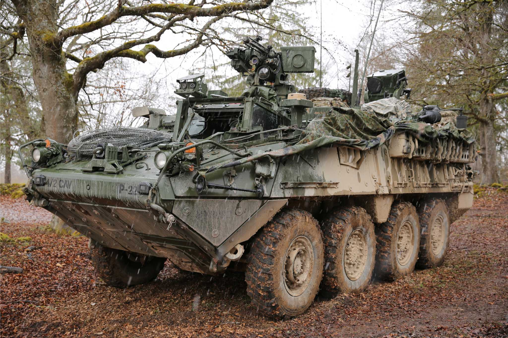
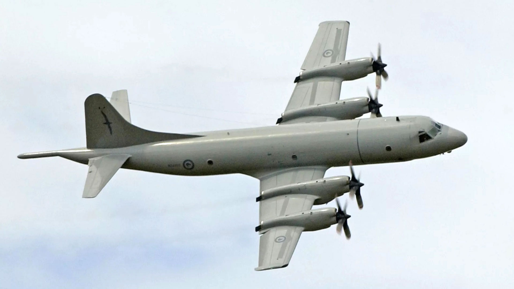

Pantallazo de otros grandes participantes de la exposicion.
Destacamos los mayores referentes de nuestro poderio Argentino en la defensa de nuestra soberania, pero tambien vamos a destacar otras innovaciones, adquisiciones y veteranos que se presentaran en el evento.

🚙 Vehículo blindado 8x8 Stryker (EE.UU.)
- Adquisición: en proceso desde 2023–2024, bajo acuerdo con EE.UU. (programa FMS).
- Fabricante: General Dynamics Land Systems (EE.UU.).
- Tipo: Transporte blindado de tropas (infantería mecanizada).
- Peso: 16–20 toneladas.
- Tripulación: 2 + 9 soldados transportados.
- Motor: Diésel Caterpillar de 350 HP, tracción 8x8.
- Armamento: Ametralladora de 12,7 mm o lanzagranadas automático (según versión).
- Competitividad: Alta movilidad táctica, blindaje modular, probado en combate.
- Destacable: Representa un salto tecnológico moderno para el Ejército Argentino, con comunicaciones y protección estándar OTAN.

✈️ Avión de patrulla marítima P-3 Orion (EE.UU.)
- Adquisición en Argentina: 1997, de segunda mano a la US Navy.
- Fabricante: Lockheed Martin (EE.UU.).
- Tipo: Avión de patrulla marítima y guerra antisubmarina.
- Motores: 4 turbohélices Allison T56.
- Autonomía: +12 horas de vuelo continuo.
- Alcance: ~9.000 km.
- Armamento: torpedos, cargas de profundidad, misiles antibuque.
- Competitividad: Excelente autonomía y cobertura oceánica, capacidad ASW (detección de submarinos).
- Destacable: Único avión argentino capaz de controlar el Atlántico Sur, vital para vigilancia marítima.

🪖 Tanque ligero SK-105 Kürassier (Austria)
- Adquisición en Argentina: finales de los años 70 (primeros lotes entre 1978–1981).
- Origen: Austríaco, fabricado por Steyr-Daimler-Puch.
- Tipo: Tanque ligero / cazacarros.
- Armamento principal: Cañón de 105 mm (misma munición que los Leopard).
- Peso: ~17 toneladas (ligero y ágil).
- Tripulación: 3 (comandante, artillero, conductor).
- Motor: Diésel de 320 HP — buena movilidad en terrenos difíciles.
- Competitividad: Muy ligero y rápido, ideal para terrenos montañosos o de baja infraestructura.
- Destacable: Tanque principal argentino en los 80–90, aún operativo con modernizaciones nacionales (SK-105A2).